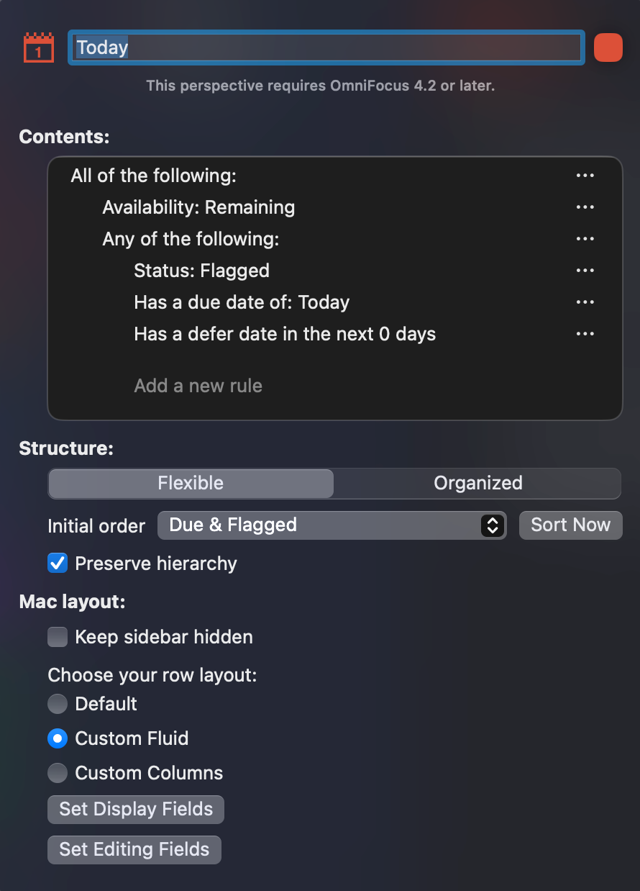
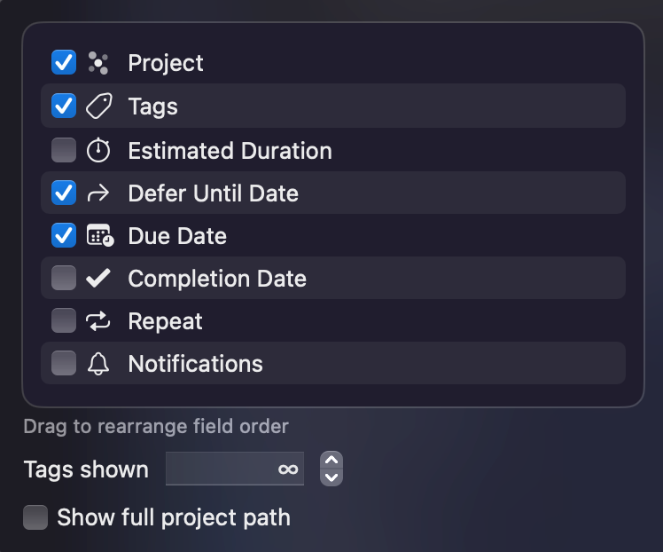
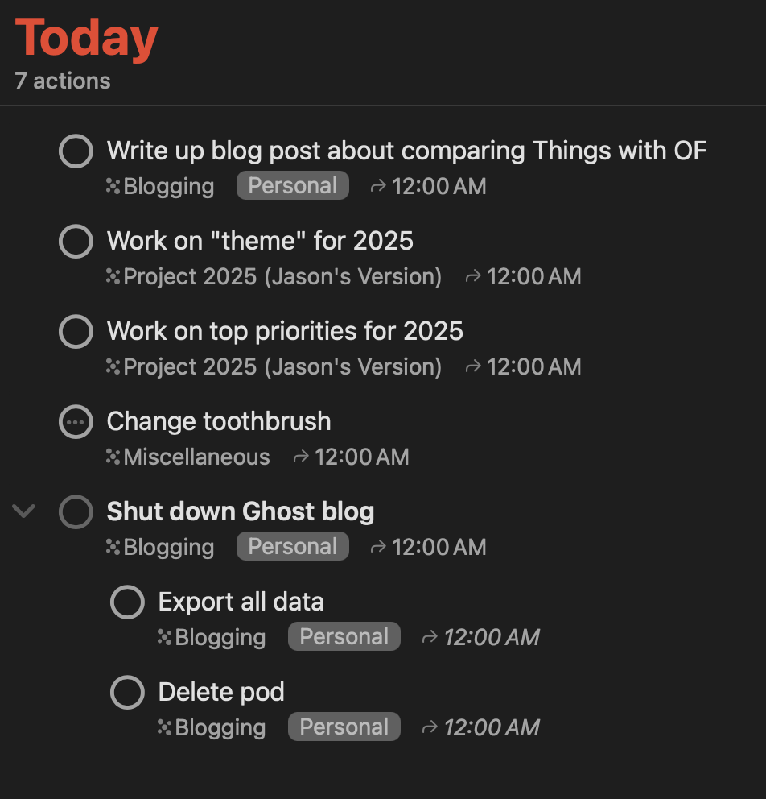
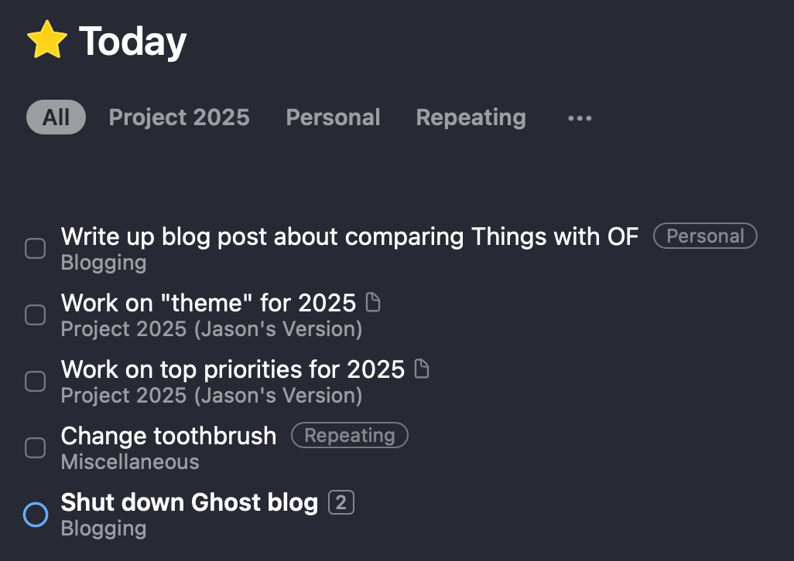
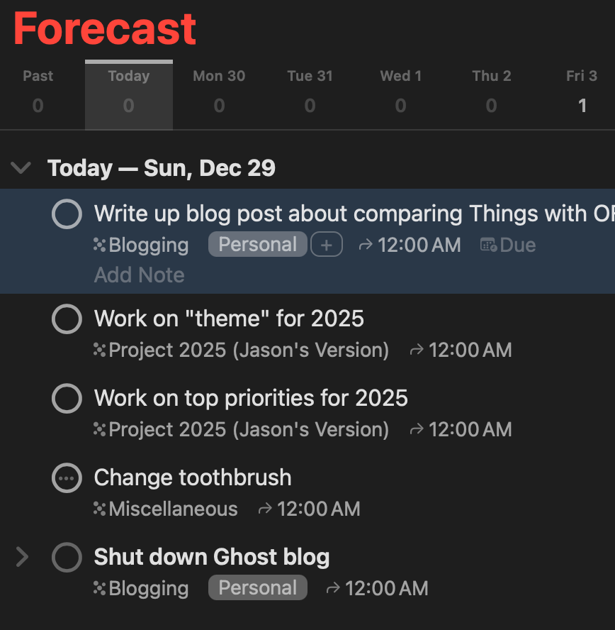

Downtown Chicago flooded with ICE agents yesterday. Department of Homeland “Security” says on social media:
“DHS under @Sec_Noem, will NOT back down. We will not rest until every violent terrorist, thug is arrested.”
Violent terrorist…thug…
At Millennium Park, agents appeared to detain a woman and multiple children.
In River North outside Catholic Charities one man was seen being detained by agent
Yeah the violent terrorists and thugs are children and guys hanging out outside of Catholic Charities. Funny that they keep saying the worst of the worst yet I only keep hearing stories like this one.
Just spent a ridiculous amount of time trying to figure out a Shortcuts error with Bear on the Mac which says “this action cannot be run in the current environment” and of which there is little information on the Internet. To make things even more fun, on my laptop for work, an M1 Pro-based MacBook Pro, the error totally froze up the Spotlight prompt and I had to kill the Spotlight process off to recover (on my personal M3 Pro-based MBP I would receive the same error but it wouldn’t freeze up).
It turns out that Apple, for some reason, creates legacy versions of Shortcut actions and I was using one of those.
From the Bear support pages:
Apple sometimes automatically creates “legacy actions” for apps that are not under our control. We recommend avoiding these actions: Create Bear Note, Create Bear Note from URL, open Bear Note, and Search in Bear.
I’m not sure why they don’t label them as legacy to avoid confusion. An error that isn’t so generic wouldn’t hurt either.
Experimenting with Pika again. Love what the guys are doing there and want to use it for a blog that concentrates on audio/music technology and photography stuff.
London Fog Latte (steamed milk with Earl Grey tea) from Starbucks is a perfect drink on a cool, cloudy Fall morning.
When I started getting into David Allen's "Getting Things Done" methodology I timed it perfectly with the release of OmniFocus by the OmniGroup which was designed specifically with the GTD methodology in mind. I used OmniFocus for almost a decade.
My needs significantly changed and I wanted something simpler. I moved to Things when version 3 was released in 2017 and I've been using it ever since.
I didn't stop looking at OmniFocus though. As a long-time user I was always intrigued with any updates but boy were they slow in coming.1 When version 3 came out in 2018 OmniGroup finally dropped single contexts in favor of being able to assign multiple tags to actions. That was a huge change in the usability of the application.
A couple of things still kept me away though. The usability of the app was showing its age and other features that were important to me, like in-depth support of recurring dates, just didn't exist like they did in Things. After a very long beta period that started in 2021 version 4 was released almost exactly a year ago (about two years!).
OmniFocus 4 was a huge rewrite and the team made many improvements to the usability of the application, especially on iOS and iPadOS (hey they finally let us edit in-place vs. needing a special editor pop-up!). They have also constantly introduced new features since the release to keep up with new features released by Apple. OmniFocus Pro is definitely a power user's tool with extensive automation and customization capabilities.
I gave it a whirl about a month ago as my full time task management application as I bought the upgrade license upon release. I really enjoyed using it. There are still some OmniFocus oddities, like actions needing to be a part of projects (well, in all but one case. More on that later. This is not a requirement in Things), that have always existed but all of the areas I cared about were taken care of long ago. Here are a couple examples:
Areas where OmniFocus absolutely shines where there is no equivalent in Things:
Make no mistake about it, OmniFocus is a power user tool but if you're a task management geek it's a wonderful playground!
After using OmniFocus 4 for a month I switched back to Things. I really wanted to do a comparison between the two. I realized that the best way to do a good comparison would be to run them in parallel to really see the differences. I just started that experiment but here are the notes I made to make them as functionally equivalent as possible.
Things is really tuned to using start dates. The equivalent in OmniFocus is called the defer date. It does the exact same thing, it keeps tasks out of your view until you can realistically do something about them. I hardly ever use due dates (only use them when something absolutely has to be done by a given date!).
OmniFocus has a flag status that can be set on an action. There really is no significance to the flag other than it's a way to visually set actions apart from un-flagged ones. There are also options available within custom perspectives to filter and sort based on the flag status.
Things doesn't have this option. The best way to emulate a flag currently in Things is to use a tag and then be able to search on it.
I use flags pretty often. If I have a large list of items for a given day I'll choose 3 that absolutely must get done and flag them. I also use flags for items that are quick one-offs that only exist for a short time in the inbox. The inbox is the one exception to the "actions must have projects" rule. Why the flag? Because that will make them show up in the Forecast view or my Today perspective (more on that later).
Things has:
OmniFocus has:
For purposes of my comparison I'm equating each of the items above so:
Areas in Things represent an area of your life that you need to track to-dos in. Areas can hold to-dos by themselves or they can hold projects.
In OmniFocus the equivalent would be folders. Unlike areas in Things, folders in OmniFocus can't hold individual actions. They can only contain projects.
In my comparison I'm making sure that my to-do items in Things are attached to a project just as in OmniFocus. None of my areas have tasks in them.
OmniFocus has three types of projects:
Things doesn't have a concept of sequential or single-action projects so I'm just using parallel projects in OmniFocus for this comparison.
OmniFocus allows nesting as many levels deep as you want via something called action groups. When you have an action, then create a child of that action, the parent becomes a grouping of the children. Things doesn't have that ability but you can subdivide a project with headings. Headings don't have the same power as action groups however as they can't have their own status, dates, etc.
For this comparison I'm making sure that I stick with one-level action groups to correspond to headings inside of a project.
This is pretty obvious as these two are functionally the same thing, a task you need to get done.
In Things there is another level available for splitting up a to-do into steps: checklists. OmniFocus does not have this capability but you can use action groups and actions to emulate checklists.
Checklists are not as flexible as action groups/actions in OmniFocus. Checklists are just part of the parent to-do whereas action groups and actions can have different dates, etc.
Things has a very limited set of lists to see your to-do items. The main list is the Today view. OmniFocus doesn't have this view. You could use the Forecast perspective but there is a better way: create a custom perspective called "Today"
Here is the setup for my Today perspective:

Let's go through this one level at a time.
A structure setting of flexible is new to OmniFocus 4 and it is what allows being able to drag items around in any order you want. They start sorted first with items with due dates then flagged items.
Preserve Hierarchy keeps action groups/projects and their contained actions sorted as seen in the screenshot below which more closely matches how they appear in Things. This setting is now the default in OmniFocus and makes the usability much better.
Set Display Fields is set the following way to look as close to Things' Today list as possible.

Set Editing Fields is set to mirror the display fields choices.
With all of those set here is what my Today perspective looks like in OmniFocus:5

And here it is in Things:

Several things to note here:
The Forecast perspective, another one of the great features of OmniFocus, is a built-in perspective in which you can pull together your action list for today and the upcoming days as well as your calendar items if you've configured that.6
This view mimics the Today and Upcoming lists in Things in one display. If you want to just see one day's actions you can click on that day and it looks exactly like the custom Today perspective created earlier:

Clicking again unselects that day and shows today and upcoming actions (which isn't possible in Things. Things instead has Today and Upcoming lists, in addition to a hidden Tomorrow list that can be accessed via Quick Find).
Why did I create a custom perspective instead of just using the Forecast perspective to see today's actions? Because I have more control over how I filter things. The Forecast perspective gives you control over how things are displayed with the same features as custom perspectives (it is just a pre-configured perspective after all) but not what items are displayed.
If there are actions with due dates that are past due they will show here in the Past section. As with custom perspectives if actions only have a defer date they will drop off the Forecast view if the defer date has passed.
One of the reasons I'm looking at OmniFocus again is that I can make things very much in my face so I don't forget them. Things has a handful of hidden lists that would be very useful but when I have to search for them I'll never remember that they're available. It would be nice if the developers would give the users the option of viewing these special lists along with the regular ones. In OmniFocus I can favorite perspectives to make them always show up in the side-bar. This is how it should be done.
It's a shame too because Things is a gorgeous application. OmniFocus 4, as good as it now is, still isn't anywhere near as attractive as Things and still has some really weird usability issues.
I hope you found this very long post informative 😂 I had intended to write a very short post just on running Things and OmniFocus in parallel to compare them but I kept adding information, and adding, and adding.... I know there will be some people out there who love the depth. It's a good look into the power of both of these task managers. They're both very good and well worth the money.